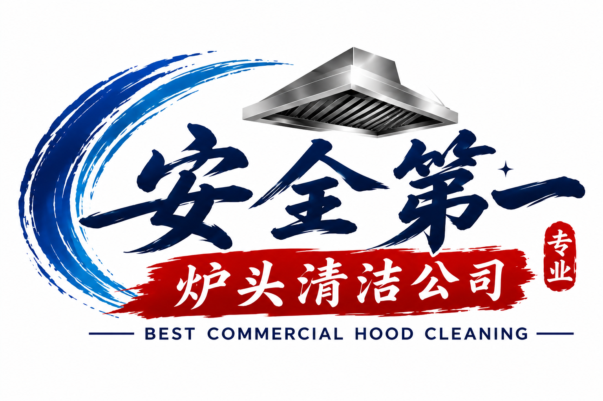

🔥
炒锅高温爆炒
旺火炒菜产生大量热气和油雾，油脂容易附着在油烟罩、油网和管道内壁。

📞 646-201-6351针对中餐外卖店炒锅、油炸炉、烧烤设备和高油烟营业环境，提供商业厨房Hood油烟罩、Filter油网、排风管道、蘑菇头及屋顶风机清洗服务。
中餐外卖店通常空间紧凑、订单集中，炒锅和油炸设备长时间连续运转。高温油烟经过Hood、Filter和Duct后，可能在看不见的位置逐渐形成积油。
旺火炒菜产生大量热气和油雾，油脂容易附着在油烟罩、油网和管道内壁。
炸鸡、薯条、春卷等设备持续工作，可能加快排烟系统中的油脂积累。
午餐和晚餐连续出餐，厨房换气系统工作时间长，需要根据使用量安排检查。
部分外卖店的排烟管道转弯多、检修位置有限，不能只看外部不锈钢是否明亮。
每家店的设备不同，最终施工内容以报价确认范围为准。我们会先了解Hood尺寸、油网数量、管道和屋顶风机情况，再说明本次具体清洗项目。
确认餐馆地址、Hood长度、油网数量、风机类型、油污程度和进入条件。
根据现场情况保护炉具和周边设备，安排适合外卖店停火后的施工时间。
对约定范围进行预处理、专业除油和高温高压清洗，处理明显积油。
完成后检查清洗范围，整理施工区域，并按约定提供清洗前后照片记录。
填写资料后，网页会打开短信草稿。资料不会储存在网页中，也不会自动发送；请确认内容并附上现场照片后发送给我们。
炒锅爆炒、油炸设备和长时间连续出餐会产生较多油烟。油脂不仅停留在Hood表面，也可能进入Filter、Duct和屋顶风机。
应根据烹饪方式、营业量、积油速度和适用检查要求决定。高频炒锅和油炸厨房通常需要更密切检查，不能只按照所有餐馆统一判断。
需要在报价时确认。我们建议把Hood、Filter、Duct、蘑菇头、蜗牛风机和ESP逐项列明，确保双方了解本次服务范围。
一般建议在停止烹饪、设备冷却并妥善处理食品后施工。具体开始时间和预计工期需要根据现场情况安排。
将地址、Hood长度、油网数量、主要烹饪设备、上次清洗时间、屋顶风机情况和现场照片短信发送到646-201-6351。
把厨房照片、炉头长度、油网数量和餐馆地址发给我们，我们会根据实际设备说明清洗范围并提供报价。